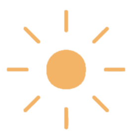

MISSION
VISION
すべての人が毎日をワクワクと前向きな気持ちで過ごせる世界を創造する。
明日への期待を高め、新しい可能性に気づき、人々の生活にときめきと充実感をもたらす。
VALUE
ひらめき
新しいアイデアと可能性を探求し、自分自身と世界を新たな目で見ることを追求する。
コミュニティ
同じ興味や目標を共有するチームがお互いを支え合い、成長できる環境を提供する。
自己実現
個々の情熱を追求し、やりたいことに集中できるサポートを提供し、それぞれのユーザーが自分らしい人生を送れるようにする。
オープンコミュニケーション
互いに思いやりを持ち、オープンな対話を通じて深い理解と信頼を育むことを大切にする。